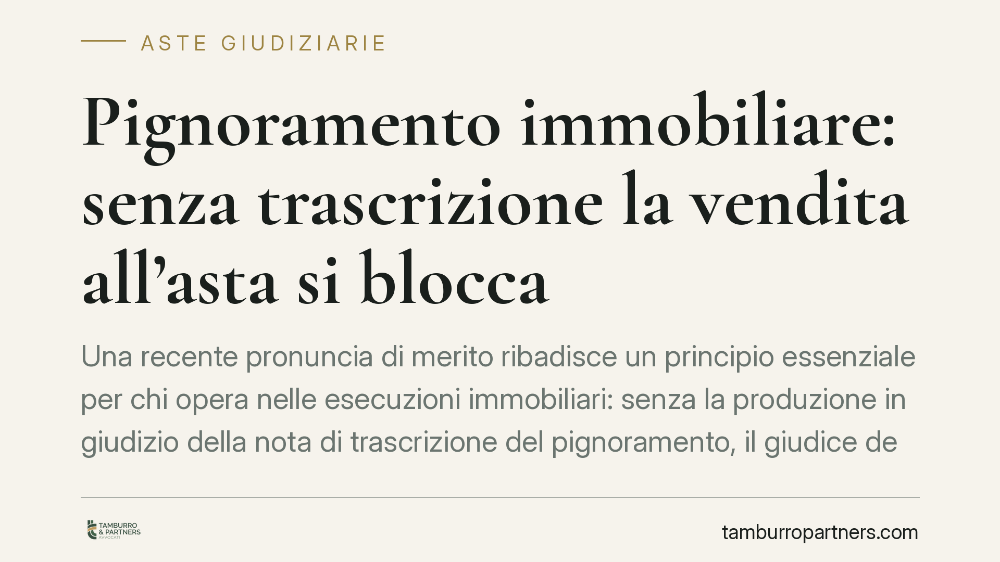

Pignoramento immobiliare: senza trascrizione la vendita all'asta si blocca
Una recente pronuncia di merito ribadisce un principio essenziale per chi opera nelle esecuzioni immobiliari: senza la produzione in giudizio della nota di trascrizione del pignoramento, il giudice dell'esecuzione non può disporre la vendita. Cambia tutto, però, se si tratta di semplice ritardo nel deposito anziché di omessa trascrizione. Vediamo perché la distinzione conta per creditori, debitori e potenziali aggiudicatari.

Il caso
Un Tribunale siciliano (sentenza segnalata dalla stampa specializzata, estremi da confermare in via ufficiale) è tornato sul valore probatorio della nota di trascrizione nel processo esecutivo immobiliare. Il principio affermato è netto: se il creditore procedente non produce la nota di trascrizione del pignoramento — in originale o in copia conforme restituita dal Conservatore dei registri immobiliari — il giudice dell'esecuzione non può dare corso alla vendita.
La pronuncia distingue con chiarezza due situazioni molto diverse. Un conto è l'omessa trascrizione del pignoramento: in questo caso la procedura è viziata alla radice e la vendita non può essere disposta. Altro è il mero ritardo nel deposito della nota già formata e restituita dal Conservatore: qui il difetto è sanabile, purché la documentazione sia integrata prima dell'udienza fissata ai sensi dell'art. 569 c.p.c.
Trattandosi di una decisione di merito, il suo valore è quello di un precedente non vincolante: utile come indicazione operativa, ma non generalizzabile come regola assoluta.
Inquadramento normativo
La trascrizione del pignoramento immobiliare è disciplinata dall'art. 555 c.p.c., che collega l'atto di pignoramento alla sua trascrizione presso la Conservatoria. È questo adempimento a rendere il vincolo opponibile ai terzi: gli artt. 2913-2915 c.c. stabiliscono che gli atti di disposizione del bene e le trascrizioni successive al pignoramento non producono effetto in danno del creditore procedente. In altre parole, la data della trascrizione fissa il momento da cui il bene è "bloccato" rispetto ai terzi.
L'art. 557 c.p.c. impone poi al creditore procedente di depositare nella cancelleria del tribunale, entro quindici giorni dalla consegna, l'atto di pignoramento con la nota di trascrizione. Poiché la nota restituita dal Conservatore spesso non è disponibile entro quel termine, la prassi e la pronuncia in esame ammettono che l'integrazione documentale possa avvenire successivamente, comunque prima dell'udienza ex art. 569 c.p.c.
Si ricordi inoltre l'art. 567 c.p.c., che richiede il deposito della documentazione ipotecaria e catastale (o del certificato notarile sostitutivo): un tassello ulteriore del quadro documentale su cui si regge la vendita.
All'esito della procedura, l'art. 2919 c.c. disciplina l'effetto traslativo della vendita forzata, trasferendo all'aggiudicatario i diritti che spettavano al debitore. È bene precisare: questa norma governa l'acquisto in sé, non l'opponibilità del vincolo ai terzi, che resta materia degli artt. 2913-2915 c.c. e 555 c.p.c.
Cosa cambia in concreto
Per il creditore procedente (e la banca). La regolarità documentale non è un dettaglio formale: la mancata produzione della nota di trascrizione può fermare la vendita. Il monitoraggio della restituzione della nota da parte del Conservatore diventa un'attività da presidiare con attenzione, per garantire l'integrazione prima dell'udienza.
Per il debitore esecutato. L'omessa trascrizione offre un possibile motivo di opposizione o di rilievo in sede di udienza. Non si tratta di uno strumento dilatorio automatico, ma di un vizio sostanziale che, se sussistente, incide sulla legittimità della vendita.
Per l'aggiudicatario e i potenziali offerenti. Chi partecipa all'asta ha interesse a che la procedura poggi su basi solide. Una vendita disposta su documentazione incompleta espone al rischio di contestazioni successive. È opportuno verificare, prima di formulare l'offerta, che il fascicolo esecutivo contenga la nota di trascrizione regolarmente prodotta.
Cosa fare in concreto
- Verifica la nota di trascrizione: controlla che nel fascicolo esecutivo sia depositata in originale o copia conforme restituita dal Conservatore.
- Distingui ritardo da omissione: accerta se il difetto sia un semplice ritardo nel deposito (sanabile) o una vera omessa trascrizione (paralizzante).
- Presidia la scadenza dell'art. 569 c.p.c.: assicurati che l'integrazione documentale avvenga prima dell'udienza fissata dal giudice.
- Controlla la documentazione ex art. 567 c.p.c.: verifica la presenza della documentazione ipotecaria e catastale o del certificato notarile.
- Per gli offerenti: consulta il fascicolo o l'ordinanza di vendita per confermare la regolarità della trascrizione prima di impegnarti economicamente.
---
*Contributo informativo a cura di Tamburro & Partners - Avv. Giuseppe Tamburro. Non costituisce parere legale.*
Comprare bene all’asta si può.
Se vuoi acquistare un immobile all’asta in sicurezza o difendere un esecutato, scrivi allo studio. Ti rispondiamo entro un giorno lavorativo.